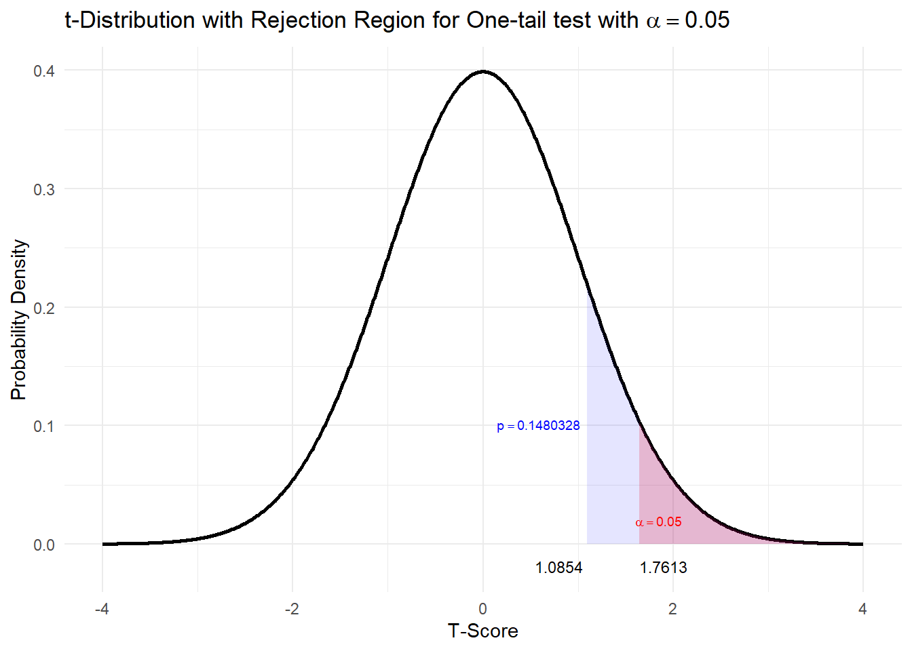

5 Exercise 1: Plant Height Hypothesis Test
Using the data frame Fertilize in the package PASWR, which contains the height in inches for plants for cross fertilization and self-fertilization, test if the data suggest that the average height of self-fertilized plants is more than 17 inches. Use \(\alpha = 0.05\).
a) Does this data fit the required assumption of normality to perform a hypothesis test?
We can verify the normality assumption of the data using exploratory data analysis (EDA()).

## Size (n) Missing Minimum 1st Qu Mean Median TrMean 3rd Qu
## 15.000 0.000 12.750 16.375 17.575 18.000 17.575 18.625
## Max Stdev Var SE Mean I.Q.R. Range Kurtosis Skewness
## 20.375 2.052 4.209 0.530 2.250 7.625 -0.262 -0.647
## SW p-val
## 0.377The results from applying the function EDA() to self fertilized plants suggest it is not unreasonable to assume that plant height for self fertilized plants follows a normal distribution. Now, proceed with the five-step procedure.
b) Step 1 - select the correct hypothesis:
What are the null and alternative hypotheses for this problem?
\[\begin{align} 1&. \quad H_0 : \mu = 17 \quad \text{versus} \quad H_1 : \mu < 17\\ O&R\\ 2&. \quad H_0 : \mu = 17 \quad \text{versus} \quad H_1 : \mu > 17 \\ O&R\\ 3&. \quad H_0 : \mu = 17 \quad \text{versus} \quad H_1 : \mu \neq 17 \end{align}\]
c) Step 2 - Choose and calculate the test statistic (before standardisation).
The test statistic \(\bar{X}=\)
The test statistic chosen is \(\bar{X}\) because \(E[\bar{X}] = \mu\).
## [1] 17.575The value of this test statistic is \(\bar{x} = \frac{\sum^n_{i=1}x_i}{n} = 17.575\)
d) Step 3a - Finding rejection region \(t_{obs} > t_{1-0.05; df}\).
Find the degrees of freedom.
Find the critical value \(t_{1-0.05; df} =\)
As the sample size is 15, the standardised test statistic is distributed \(t_{14}\). Moreover, since \(H_1\) is an upper one-sided hypothesis, the rejection region is the \(t_{obs} > t_{1-0.05; 14} = t_{0.95; 14}.\)
From the statistical table, the \(t\)-value that corresponds to the chosen significance level (i.e., the critical value) is \(t_{0.95; 14} = 1.7613\). Remember this is positive because we are discussing the upper tail of the \(t\)-distribution.
This same \(t\)-value can be found in R by using:
## [1] 1.76131e) Step 3b - Finding the standardised test statistic and \(p\)-value for our data.
Calculate the value of the standardisied test statistic.
Calculate the \(p\)-value that corresponds to our standardised test statistic.
The standardised test statistic under the assumption that \(H_0\) is true and its distribution are \(\frac{\bar{X}−\mu_0}{S/\sqrt{n}} \sim t_{df}\).
- Our standardised test statistic is given by \(\frac{\bar{X}−\mu_0}{S/\sqrt{n}} = \frac{17.575−17}{S/\sqrt{n}}\). The standard deviation \(S\) and the sample size \(n\) can be obtained in R by using:
## [1] 2.051676## [1] 15This gives the value of our standardised test statistic \(t_{obs}=\frac{\bar{X}−\mu_0}{S/\sqrt{n}} = 1.0854\):
## [1] 1.085437OR
The standardised test statistic can be found using:
##
## One Sample t-test
##
## data: FERTILIZE$self
## t = 1.0854, df = 14, p-value = 0.148
## alternative hypothesis: true mean is greater than 17
## 95 percent confidence interval:
## 16.64196 Inf
## sample estimates:
## mean of x
## 17.575## [1] 0.1480328Graphically this could be shown: 
The value of our standardised test statistic is greater than the critical value and outside the rejection region. The \(p\)-value is greater than \(\alpha\)
OR
The \(p\)-value can be found using:
##
## One Sample t-test
##
## data: FERTILIZE$self
## t = 1.0854, df = 14, p-value = 0.148
## alternative hypothesis: true mean is greater than 17
## 95 percent confidence interval:
## 16.64196 Inf
## sample estimates:
## mean of x
## 17.575f) Step 4 - Statistical Conclusion
Do we reject our null hypothesis?
I. From the rejection region, we fail to reject \(H_0\) because the standardised test statistic is less than the critical value and hence outside the rejection region i.e \(t_{obs} = 1.0854 < 1.7613\).
OR
- From the \(p\)-value, we fail to reject \(H_0\) because the \(p\)-value is \(0.1480 > 0.05\).
Whichever method we use, we fail to reject \(H_0\).
g) Step 5 - English Conclusion
Is there statistical evidence to suggest a mean greater than 17?